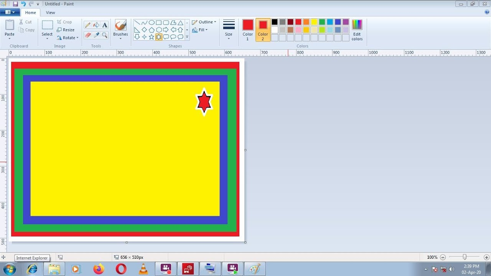

|
|
|
|
| Home | Table Of Content | Others | About |
Introduction about Paint ProgramPaint Program is a software application that allows users to create digital images and graphics. It is a simple and easy-to-use program that is perfect for beginners who want to learn how to create digital art. The program provides users with a variety of tools and features that allow them to create images from scratch or edit existing images. The Paint Program interface is user-friendly and intuitive. Users can easily navigate through the program’s menus and toolbars to find the tools they need. The program provides users with a variety of drawing tools such as brushes, pencils, and shapes. It also provides users with a color palette that allows them to choose from a wide range of colors. One of the best things about Paint Program is that it is free and comes pre-installed on most Windows computers. This means that users do not have to purchase any additional software to start creating digital art. Overall, Paint Program is a great tool for anyone who wants to learn how to create digital art or edit existing images. |
Layout of MS Paint |